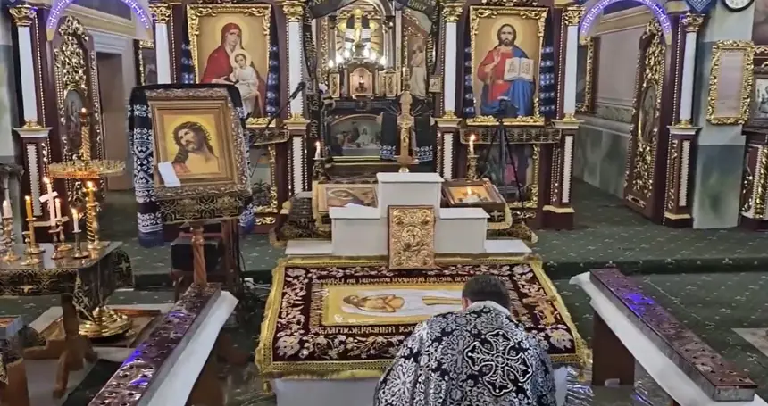

Розповідь про храм
Храм Успіння Пресвятої Богородиці збудувала громада села у 1865 році. Через сім років у ньому з’явився іконостас роботи віденських художників, який прикрашає храм і досі.
[Спогади настоятеля і старших парафіян: допишемо разом]
Відомості за даними Івано-Франківської єпархії ПЦУ.